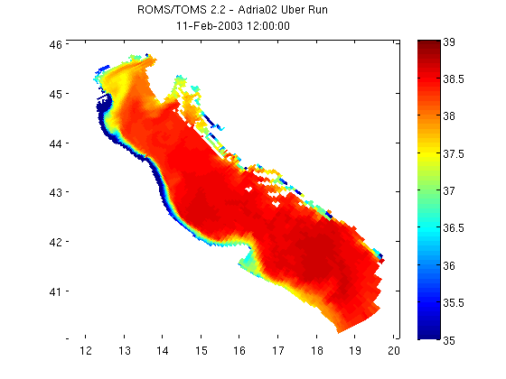

Contents
NCGEODATASET GEODEMO_1D
Method D: Read surface salinity using NJ_TSLICE Most compact method for getting data and grid, but limited to entire slices or 3D volumes of data at a particular time step.
% OPeNDAP Data URL for a CF-Compliant curvilinear ROMS model dataset url ='http://geoport.whoi.edu/thredds/dodsC/examples/bora_feb.nc'; itime=1; ilevel=-1; % nj_tslice uses "-1" instead of "end" to indicate last level [salinity,grd]=nj_tslice(url,'salt',itime,ilevel);
Plot with pcolor
Plotting using pcolor is as simple as the code below. Sometimes coordinates are stored in the netcdf datasets as vectors (vs. the 2-d arrays that these lat/lon coordinates are in). When this is the case, see Matlab's meshgrid function to create 2-d plaid grids from the vectors.
% Remember that pcolor expects a double as input pcolor(grd.lon, grd.lat, double(salinity)) shading flat; colorbar; caxis([35 39]); % Now let's add a title to the figure that includes the dataset's global % attribute title and the date of the data that we subset. title({nc.attribute('title'); datestr(grd.time)})